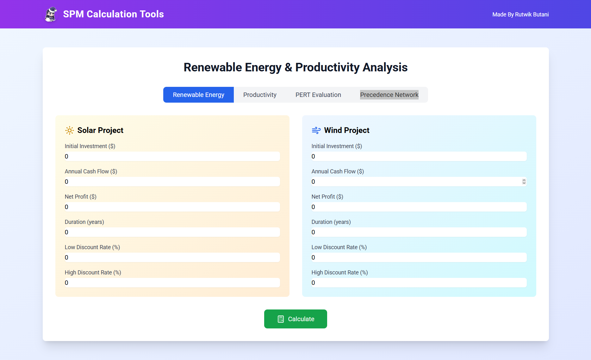
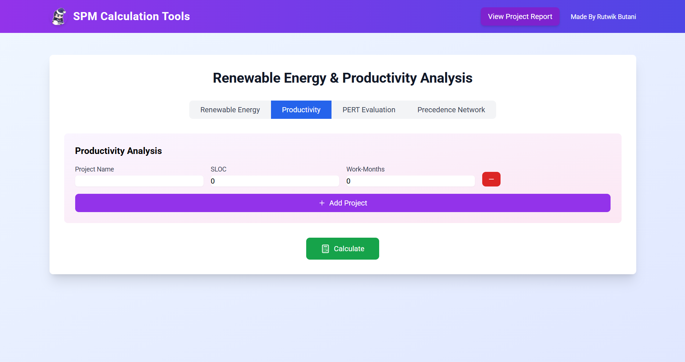
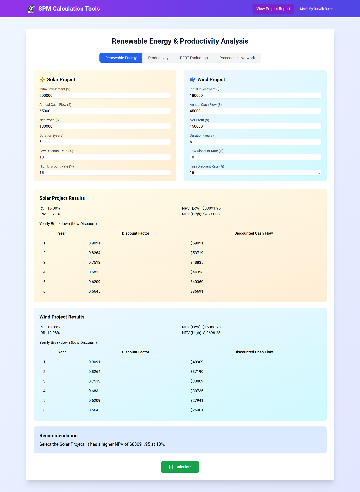
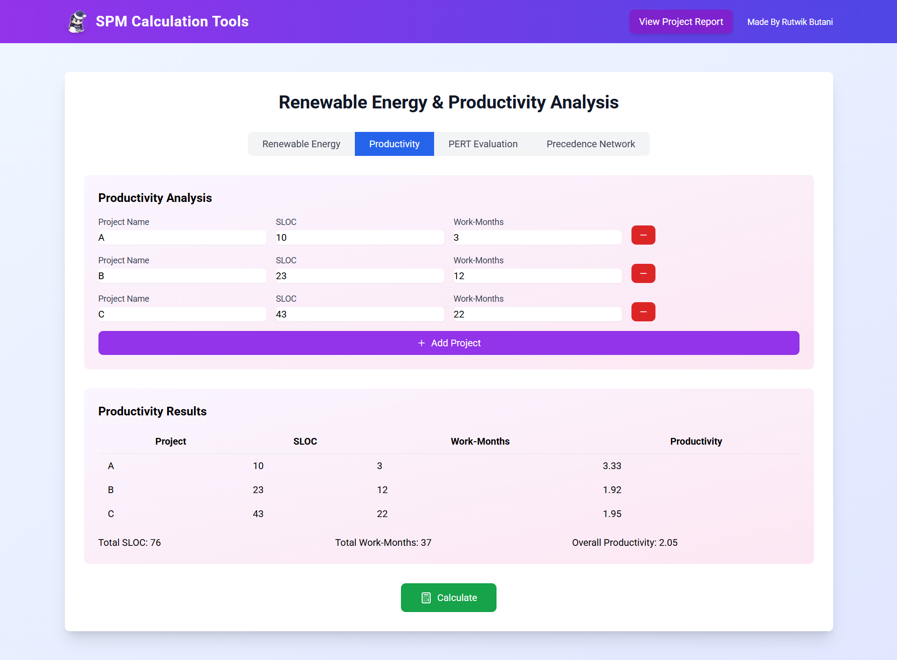
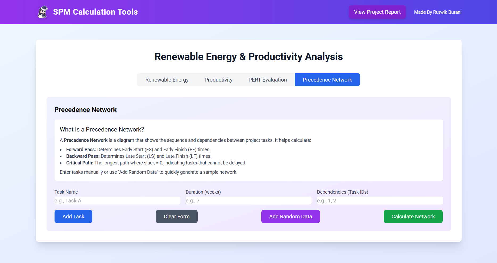
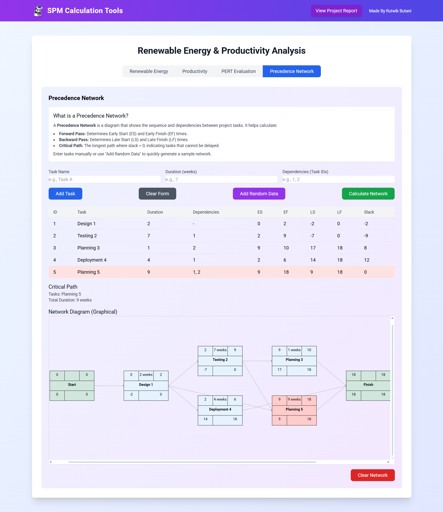

SPM Analysis Tools Project Report
| Project Title |
Software Project Management Analysis Tools |
| Student Name(s) |
Rutwik Butani |
| Enrollment No(s) |
202203103510304 |
| Course & Semester, Division |
Software Project Management (SPM)
6 - D |
| Branch |
B. Tech Computer Engineering (Software Engineering) |
| Submission Date |
April 8, 2025 |
Objective
The objective of this project is to develop a comprehensive suite of Software Project Management analysis tools that assist project managers in making informed decisions about project planning, resource allocation, and cost management. The application provides:
- Renewable Energy Project Analysis - To evaluate and compare renewable energy projects based on ROI, NPV, and IRR calculations
- Software Productivity Analysis - To track and measure software development productivity across multiple projects
- PERT Analysis - To estimate task durations using the Program Evaluation and Review Technique
- Precedence Network - To visualize project task dependencies and critical paths
Code Snippets for Key Functions
ROI Calculation
// From utils/calculations.js
export const calculateROI = (netProfit, investment, duration) => {
const averageAnnualProfit = netProfit / duration;
return (averageAnnualProfit / investment) * 100;
};
NPV Detailed Calculation
// From app.py and reimplemented in frontend
export const calculateNPVDetailed = (initialInvestment, annualCashflow, discountRate, duration) => {
const rate = discountRate / 100;
let npv = -initialInvestment;
const yearlyData = [];
for (let t = 1; t <= duration; t++) {
const discountFactor = 1 / Math.pow(1 + rate, t);
const discountedCashflow = discountFactor * annualCashflow;
npv += discountedCashflow;
yearlyData.push([t, parseFloat(discountFactor.toFixed(4)), parseInt(discountedCashflow)]);
}
return { npv, yearlyData };
};
PERT Expected Time Calculation
// From PERTCalculator.tsx
const expectedTime = (optimistic + 4 * mostLikely + pessimistic) / 6;
Project Productivity Calculation
// From utils/calculations.js
export const calculateProductivity = (sloc, workMonths) => {
if (workMonths <= 0) return 0;
return sloc / workMonths;
};
Tools/Technologies Used
Frontend
- React - JavaScript library for building user interfaces
- TypeScript - Typed superset of JavaScript for improved developer experience
- Tailwind CSS - Utility-first CSS framework for rapid UI development
- React Hot Toast - Notification library for React
- Lucide React - Icon library for React applications
Backend
- Flask - Python web framework for the backend server
- NumPy Financial - Library for financial calculations in Python
Deployment
- Vercel - Platform for frontend deployment
- Docker (potentially) - For containerization
Development Tools
- npm - Package manager for JavaScript/TypeScript dependencies
- Vite - Modern frontend build tool
- ESLint - JavaScript/TypeScript linting tool
- PostCSS - Tool for transforming CSS with JavaScript
Inputs Used for Testing New Features
Renewable Energy Analysis Input

Input form for Solar and Wind project analysis with sample values
Productivity Analysis Input

Productivity tracking form with sample project data input
PERT Analysis Input

PERT calculator form with sample task time estimates
Screenshots of the Output
Renewable Energy Analysis Results

Comparative results between Solar and Wind projects, including ROI, NPV, and IRR calculations
Productivity Analysis Results

Productivity metrics and comparison across multiple software projects
PERT Analysis Results

Calculated expected times and variance based on PERT analysis
Precedence Network Input

Input form for creating a Precedence Network with task dependencies
Precedence Network Output

Visual representation of task dependencies in a project network
Source Code Repository
View Complete Source Code: This report includes only key code snippets for demonstration purposes. To explore the complete implementation, please visit the GitHub repository:
💻GitHub Repository: SPM-Analysis-Tools
The repository contains all source files, documentation, and implementation details of the modules discussed in this report.
Future Scope
The application has several areas for future enhancement:
- Precedence Network Diagram - Fixing and improving the visualization of the precedence network diagram to better represent task dependencies
- PERT Evaluation Enhancement - Adding the diagram functionality for PERT analysis to visualize the critical path
The primary immediate focus will be on fixing the Precedence Network diagram and adding the diagram for PERT Evaluation to enhance the project planning capabilities of the application.
Submitted on: April 8, 2025